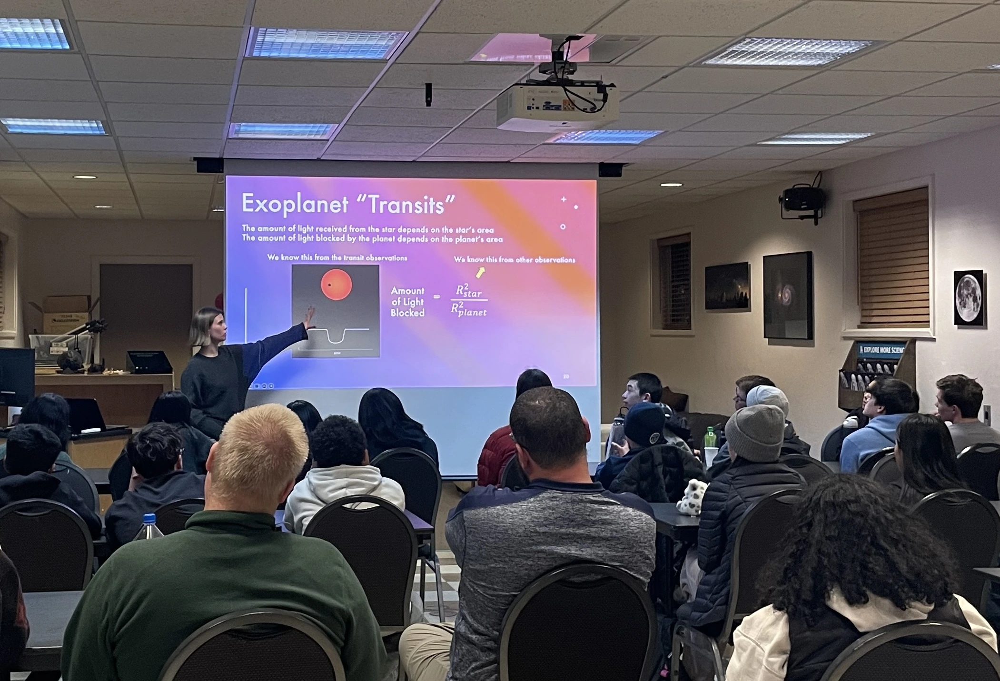

Outreach
My outreach efforts have been dedicated to empowering girls in STEM and fostering inclusivity within the scientific community. Recognizing the challenges faced by women in fields like physics, I have committed myself to creating opportunities for young girls to see themselves represented and supported in STEM. These efforts have been aimed at breaking down barriers and addressing the underrepresentation of women in science, encouraging the next generation to pursue their passions without hesitation.
Current Mentorship Roles
- Girls Who STEM (Arizona Science Center) — I guide young girls through their own uncertainties and self-doubt, providing support and encouragement to pursue their passions in STEM. I have mentored over 40 young women through this program.
- STAR Lab Mentor — I advise the research of a high school student mentee, meeting with them weekly, reviewing their written work, and guiding them toward their research goals.
- UA Sky School Instructor — I lead hands-on science education programs for K–12 students in outdoor learning environments, helping to foster curiosity and engagement in STEM.
- Panels & Events — I regularly give talks to Women in Physics clubs, serve on panels at CUWiP conferences, and present at STEAM Nights at local elementary schools.
In recognition of my commitment to mentorship and service, I was honored with the 2025 Leif Erland Andersson Graduate Student Award for Service, which recognizes outstanding contributions to outreach and community engagement at LPL.

Anna Taylor giving an exoplanet transit talk to students at UA Sky School
Undergraduate Involvement
During my undergraduate years, I served as Vice President of NCSU’s Women in Physics Club, where I focused on fostering supportive spaces for women in STEM by organizing career talks, social events, and panel discussions to promote connection and access to valuable resources. I also participated in various outreach events such as speaking in research panels and being a mentor to REU students.
Early Outreach Efforts
My efforts towards this goal started early. In my senior year of high school, as part of my senior project, I wrote and illustrated a children’s book about a young girl who liked science and looked up to her mother, who was a scientist. This book was entitled Mikayla’s Dream, and I printed and distributed it to all 10 elementary schools in my hometown, reaching over 5,000 students, intending to increase the representation of women in STEM and reach young girls with that representation.